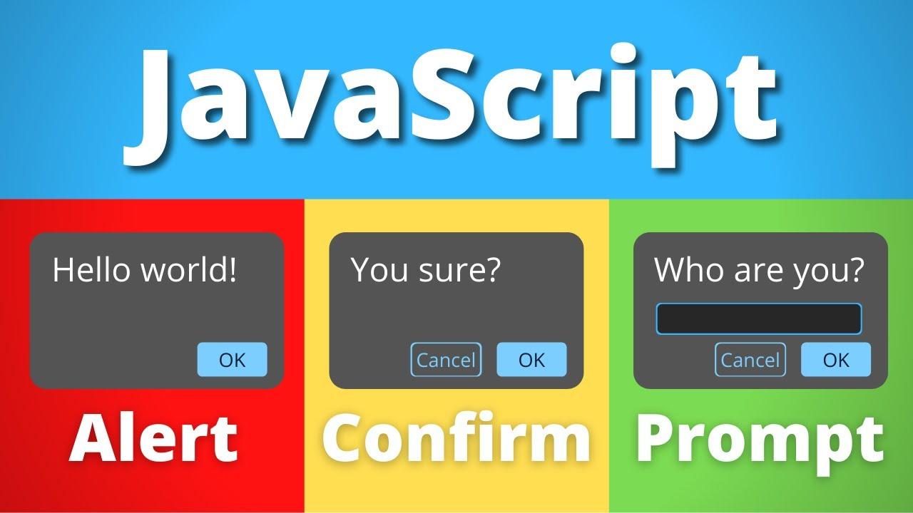
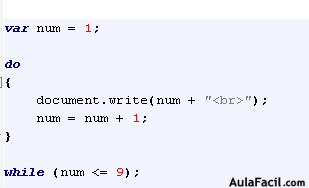
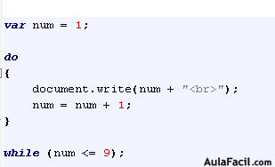
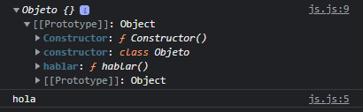

Tipos de Variables
Los tipos de variables más comunes son: String, Number, Boolean, Symbol. Y las declaraciones de variables es decir los alcances pueden ser: var, let y const, var es del tipo de alcance global que afecta a todo el archivo Javascript es to tambien puede ser definido como el scope el ámbito del programa, let solo afecta a un bloque de código y const es un valor constante durante toda la ejecución del programa y debe ser inicializada al declarar.
| Tipos de variables | Descripción |
|---|---|
| String | Variable del tipo cadena de texto. |
| Number | variable del tipo numérico. |
| Boolean | Variable del tipo boleana (true/false). |
algunos errores comunes con las variables pueden ser: undefined que significa que existe una variable que no tiene ningún valor o no esta inicializado, null es un valor inicializado a una variable del tipo vacio o nulo, NaN indica que se operó datos numéricos con otros tipos de datos distintos a un número.
Prompt, Alert y Confirm
El Prompt es una función que guarda un dato de entrada através de un mensaje en el navegador, el cual recibe como parámetro el mensaje que queremos que apoye al dato de entrada deseado. Alert nos permite mostrar un mensaje en el navegador un PopUp, Confirm es donde podemos introducir una pregunta el cual se tendra solo dos opciones Si o No, el cual retorna un valor booleano.
Operadores de Asignacion
Los operadores de asignación son aquellos operadores que sirven para darle valores a una variable y tenemos una variedad.
| Nombres | Abreviaciones | Significado |
| Asignación | x = y | x = y |
| Asignación de adición | x += y | x = x + y |
| Asignación de sustracción | x -= y | x = x - y |
| Asignación de multiplicación | x *= y | x = x * y |
| Asignación de división | x /= y | x = x / y |
| Asignación de resto | x %= y | x = x % y |
| Asignación de exponenciación | x **= y | x = x ** y |
| Asignación de desplazamiento a la izquierda | x <<= y | x = x << y |
| Asignación de desplazamiento a la derecha | x >>= y | x = x >> y |
| Asignación sin signo de desplazamiento a la derecha | x >>>= y | x = x >>> y |
| Asignación AND | x &= y | x = x & y |
| Asignación XOR | x ^= y | x = x ^ y |
| Asignación OR | x |= y | x = x | y |
Operadores Logicos
Los operadores logicos nos permite hacer cumplir ciertas condiciones que son importantes para la logica de los programas por ejemplo:
Condicionales
Los operadores === y !== tienen una aplicacion diferente a los operadores == y !=, con la diferencia que los primeros comparan el tipo de dato ademas del valor.
Los condicionales nos permite eecutar bloques si se cumplen ciertas condiciones.
Arrays
Los arrays comunmente los arrays se escriben en una variable entre llaves y dentro las llaves los elementos separados por comas, la posición de los elementos empieza por 0, pero tambien tenemos los arrays asociativos que son arrays del tipo clave valor, que los elementos igual van entre las llaves y separadas por comas con la diferencia que al elemento le acompaña un identificador (clave) del tipo cadena (clave: valor), a diferencia de el array convencional estos elementos pueden ser llamados individualmente por el nombre de su identificador (clave).
Bucles e Iteracion
Bucles e Iteración es la forma en que queremos repetir un bloque de instrucciones, de los cuales tenemos: while el cual es un bucle que permite repetir un bloque mientras una condición se cumpla while(condición){bloque;}, do while el cual es un bucle que permiterepetir un bloque hasta que se cumpla una condición do{bloque;}while(condición), una característica es que la primera iteración se ejecuta antes de preguntar por la condición. la sentencia break; es una sentencia para bucles que permite detener la ejecución de un bloque. for es un bucle determinado a diferencia del while y do while que son indeterminados, al cual creamos una variable, una condición y un cambio de la variable que permita limitar la iteración hasta que no cumpla la condición for(declaración_e_inicialización ; condición ; aumento_decremento){bloque;}, generalmente la variable declarada e inicializada aumenta o decrementa hasta que no cumpla la condición, con esto generamos la iteración y la controlamos en base a la condición. La sentencia continue; salta una iteración dentro de un bucle desde donde se encuentra dicha sentencia. el bucle for in es un bucle for en el cual recibe como parametros una variable seguido de la palabra reservada in y despues generalmente un arreglo, esto lo que hace es que la variable toma como valores los indices del arreglo mediante la iteración, además de los índices nos muestra el nombre de las propiedades si es que se trata de un objeto, for of es casi igual que for in solo que este en vez de tomar los índices recupera los valores del arreglo. label es un puntero que podemos poner por encima de talvez varios bloques encima del actual para poder utilizar break nombreLabel; o continue nombreLabel; y ponemos el label como nombreLabel: encima de otro for o bloque para poner el puntero en ese punto.
 

Funciones
Las funciones en Javascript se pueden representar de dos maneras diferentes y sirven para optimizar el código. La forma de usar las funciones es por ejemplo function nombre_de_la_funcion(parametros_si_se_quiere){código; return valor_de_retorno_si_se_quiere;} y se puede llamar a ala función de la siguiente manera nombre_de_la_funcion(parametros_si_se_necesita);, otra manera de crear una función es creando una variable const nombre_de_la_funcion = function(parametros_si_se_quiere){código; return valor_de_retorno_si_se_quiere;}; y se la llama de la misma manera. Las funciones flechas son otra manera de crear funciones como por ejemplo const nombre_de_la_funcion = (parametros_si_se_necesita) -> {código; return valor_de_retorno_si_se_quiere;};, algunas característicaespeciales pueden ser que si lleva un solo parámetro no necesita paréntesis, también si lleva una sola línea de código no es necesario las llaves y el valor de retorno es automático a la variable a la cual inicializamos como función.

POO
La programación orientada a objetos es un paradigma de progrmación, el cual lleva las siguientes características: clase, objeto, atributo, método, constructor e instanciación.
| Característica | Significado |
|---|---|
| clase | Es una plantilla de una entidad. |
| objeto | Es un elemento con las bases de la clase. |
| atributo | Son propiedades específicas de una clase. |
| método | Son funciones que lleva la clase dentro de su propio ámbito. |
| constructor | Es una función única para establecer valores por defecto de las propiedades de una clase. |
| instanciación | Es el momento de inicializar un objeto con base a la clase. Generalmente se utilza un dato del tipo const, pero este puede ser de otro tipo. |

Algunas características importantes son: para crear al constructor se usa la palabra reservada constructor que es una función de inicio, para la creación de métodos no se permite funciones flecha.
Algunas características de la POO son: abstracción, modularidad, encapsulamiento y poliformismo. Abstracción es la recolección de atributos de alguna entidad que las caractericen, es abstraer características. Modularidad es la creación de operaciones de ayuda, en otras palabras funciones que puedan ayudarnos a tratar los objetos con diferentes funcionalidades. Encapsulamiento es el alcance que los datos pueden tener, nos referimos a propiedades, métodos y clases, hasta donde pueden ser utilizados, pueden ser públicos, privados o protegidos como en Java. Polimorfismo es que un objetos de una misma clase en base a utilizar los mismos métodos pueden tener resultados o funcionalidades diferentes.
La herencia, métodos estáticos, getters y setters pueden codificarse de la siguiente manera:
| Método | Característica |
| startsWith() | Busca una cadena desde el índice 0 al final de la cadena donde lo llamemos, por defecto empieza a buscar desde el índice 0 pero este puede ser desde otro índice que indiquemos, devuelve true, si no devuelve false. |
| endsWwidth() | Busca una cadena desde el índice final al 0 de la cadena donde lo llamemos, por defecto empieza a buscar desde el índice final pero este puede ser desde otro índice que indiquemos, devuelve true, si no devuelve false. |
| includes() | Busca una cadena desde el índice 0 al final de la cadena donde lo llamemos, por defecto empieza a buscar desde el índice 0 pero este puede ser desde otro índice que indiquemos, devuelve true, si no devuelve false. |
| indexOf() | Nos devuele el índice donde empieza una cadena de la cadena principal donde llamamos a esta función, podemos indicar el índice desde donde queremos que empiece a buscar, la búsqueda es desde el índice 0 al final. |
| lastIndexOf() | Nos devuele el índice donde empieza una cadena de la cadena principal donde llamamos a esta función, podemos indicar el índice desde donde queremos que empiece a buscar, la búsqueda es desde el índice final al 0. |
| padStart() | Nos introduce una cadena por el principio a la cadena principal donde llamamos esta función, en loa parámetros introducimos un numero que indica el tamaño que queremos que tenga esta cadena sumado con la cadena principal, si excedemos en su tamaño real, este se va repitiendo, luego introducimos la cadena que queremos que vaya al inicio de la cadena principal. |
| padEnd() | Nos introduce una cadena al final de la cadena principal donde llamamos esta función, en loa parámetros introducimos un numero que indica el tamaño que queremos que tenga esta cadena sumado con la cadena principal, si excedemos en su tamaño real, este se va repitiendo, luego introducimos la cadena que queremos que vaya al inicio de la cadena principal. |
| repeat() | Es una función que repite la cadena donde llamamos a esta función, en los parámetros se pone un número que indica la cantidad de veces que queremos que se repita. |
| split() | Devuelve un arreglo con todas las subcadenas separadas por la cadena especificada en los parámetros de la función. |
| substring() | Nos retorna un pedazo de la cadena principal donde llamamos a esta función, en los parámetros especificamos los indices inicio y final de la subcadena dentro de la cadena principal. |
| toLowerCase() | Convierte la cadena principal a minúsculas. |
| toUpperCase() | Convierte la cadeba principal a mayúsculas. |
| toString() | devuelve una cadena que representa al objeto especificado. |
| trim() | Elimina los espacios en blanco de la cadena principal. |
| Método | Descripción |
| pop() | Elimina el último elemento de un array y lo devuelve. |
| shift() | Elimina el primer elemento de un array y lo devuelve. |
| push() | Agrega un elemento al array al final de la lista. |
| reverse() | Invierte el orden de los elementos de un array. |
| unshift() | Agrega uno o más elementos al inicio del array y devuelve la nueva longitud del array. |
| sort() | Ordena los elementos de un arreglo localmente y devuelve el arreglo ordenado |
| splice() | Cambia el contenido de un array eliminando elementos existentes y/o agregando nuevos elementos. |
| join() | Une todos los elementos de una matriz u objeto. |
| slice() | Devuelve una parte del array dentro de uno nuevo. |
| Métodos ya vistos | toString(), indexOf(), lastIndexOf() y include(), que funcionan similar que con cadenas solo que con arreglos. |
| filter() | Crea un nuevo array con todos los elementos que coincidan con la descripción del parámetro. Es igual que el forEach() con la diferencia que se puede poner condiciones para hacer distintas operaciones (arreglo.filter(elemento => condición);) |
| forEach() | Recibe como parámetro a una función, esta puede ser una función flecha, generalmente de un solo parámetros que reperesenta a los elementos del arreglo. |
| Método | Descripción |
| sqrt() | Devuelve la raíz cuadrada positiva de un número. |
| cbrt() | Devuelve la raíz cúbica de un número. |
| max() | Devuelve el número mayor de dos o más números. |
| min() | Devuelve el número menro de dos o más números. |
| random() | Devuelve un número pseudo-aleatorio entre 0 y 1. |
| round() | Devuelve el valor de un número redondeado al número entero más cercano. |
| fround() | Devuelve la representación flotante de precisión simple (4 bytes) más cercano. |
| floor() | Devuelve el mayor entero, menor que o igual a un número. |
| trunc() | Devuelve la parte entera del número x, la eliminación de los dígitos fraccionarios. |
| PI | Ratio de la circunferencia de un circulo a su diámetro. |
| SQRT1_2 | Raíz cuadrada de 1/2. |
| SQRT2 | Raíz cuadrada de 2, aproximadamente 1.414. |
| E | Constante de Euler, la base de los logaritmos naturales. |
| LN2 | Logaritmo natural de 2, aproximadamente 0.693. |
| LN10 | Logaritmo natural de 10, aproximadamente 2.303. |
| LOG2E | Logaritmo de E con base 2, aproximadamente 1.443. |
| LOG10E | Logaritmo de E con base 10, aproximadamente 0.434. |
| Método | Descripción |
| assert() | Aparece un mensaje de error en la consola si la afirmación es falsa. Si la afirmación es verdadera, no aparecerá nada. (NO ESTANDAR) |
| clear() | Limpia la consola. |
| error() | Muestra un mensaje de error en la consola web. |
| info() | Emite un mensaje informativo a al consola web. En Firefox y chrome, se muestra un pequeño ícono "i" junto a estos elementos en el registro de la consola web. |
| log() | Muestra un mensaje en la consola web o del intérprete Javascript. |
| table() | Esta función toma un argumento obligatorio: data, que debe ser un array o un objeto y un parámetro adicional: columns y nos muestra una tabla en consola. |
| warn() | Imprime un mensaje de advertencia en la consola wweb. |
| dir() | Despliega una lista interactiva de las propiedades del objeto Javascript especificado. (NO ESTANDAR) |
| Método | Descripción |
| count() | Registra el número de veces que se llama a count(). Esta función toma como argumento opcional una etiqueta. |
| countReset() | Resetea el contador console.count();. |
| Método | Descripción |
| group() | Crea un nuevo grupo en línea en el registro de la consola web. |
| groupEnd() | Remueve un grupo en línea en el registro de la consola web. |
| groupCollapsed() | Crea un grupo en línea pero contraido, el usuario debe expandirlo para verlo. |
| Método | Descripción |
| time() | inicia un temporizador. Se introduce un label como parámetro para diferenciarse de otros tiempos. |
| timeEnd() | Registra el valor actual de un temporizador. Se introduce un label como parámetro para diferenciarse de otros tiempos. |
| timeLog() | Detiene un temporizador. Se introduce un label como parámetro para diferenciarse de otros tiempos. |
DOM
El DOM (Document Object Model) es una interfaz que contiene todos los elementos de una página web el cual cuenta con ciertas características como los son los nodos que pueden ser cualquier etiqueta del cuerpo (body), como un párrafo (Etiqueta p), el mismo body o incluso las etiquetas de una lista.
- Document: El nodo document es el nodo raíz, a partir del cual derivan el resto de nodos.
- Element: Nodos definidos por etiquetas HTML.
- Text: El texto dentro de un nodo element se considera un nuevo nodo hijo de tipo text (texto).
- Attribute: Los atributos de las etiquetas definen nodos, (en Javascript no los veremos como nodos, sino como información asociada al nodo de tipo element)
- Comentarios y otros: los comentarios y otros elementos como las declaraciones doctype en cabecera de los documentos HTML generan nodos.
| Método | Descripción |
| getElementById() | Selecciona un elemento por ID. document.getElementById("#Identificador"); |
| getElementsByTagName() | Selecciona todos los elementos que coincidan con el nombre de la etiqueta especificada. Cuando se selecciona varios elementos se genera un arreglo de los mismos. document.getElementsByTagName("etiqueta"); |
| querySelector() | Devuelve el primer elemento que coincida con el grupo especificado de selectores. document.getElementById(".nombre_de_clase"); |
| querySelectorAll() | Devuelve todos los elementos que coincidan con el grupo especificado de selectores. document.getElementById(".nombre_de_clase"); |
MÉTODOS PARA DEFINIR, OBTENER Y ELIMINAR VALORES DE ATRIBUTOS
| Método | Característica |
|---|---|
| setAttribute() | Modifica el valor de un atributo. elemento_seleccionado.setAttribute("nombre_de_atributo", "valor_a_modificar"); |
| getAttribute() | Obtiene el valor de un atributo. elemento_seleccionado.getAttribute("nombre_de_atributo"); |
| removeAttribute() | Remueve el valor de un atributo. elemento_seleccionado.removeAttribute("nombre_de_atributo"); |
ATRIBUTOS GLOBALES
| Método | Característica |
|---|---|
| class | Lista de clases del elemento separadas por espacios. |
| contenteditable | Indica si el elemento puede ser modificable por el usuario (bool). |
| dir | Indica la direccionalidad del texto. con valores ltr dirección izquierda, rtl dirección derecha. |
| hidden | Indica si el elemento aún no es, o ya no es relevante. sus valores son booleanas (true/false), desaparece o no dependiendo del valor al elemento. |
| id | Define un identificador único. |
| style | Contiene declaraciones de estilo CSS para ser aplicadas al elemento. |
| tabindex | Indica si el elemento puede obtener un focus de input. Su valor son número que indican el orden en que se irá dando el focus mientras presionemos la tecla TAB. |
| title | Contiene un texto con información relacionada al elemento al que pertenece. |
Algunos atributos de los inputs podemos utilizarlos directamente como:
- 1. className: Nombre de clase de una etiqueta o elemento.
- 2. value: Valor, contenido de un input.
- 3. type: El tipo de un input.
- 4. accept: Generalmente atributo de un input de tipo file para seleccionar archivos de un tipo específico.
- 5. form: Generalmente atributo de un input de tipo submit, para referenciar un formulario por su identificador id, esto para poder enviar los datos del formulario aún cuando el submit este fuera del formulario (form).
- 6. minlength: Establece un minimo de caracteres aceptados dentro del input.
- 7. placeholder: Es un texto de fondo generalmente para inputs del tipo text.
- 8. required: Es para definir campos requeridos, es decir que inpide el envío de los datos sin antes haber sido llenados con true/fasle.
La propiedad style es igual una propiedad que prescinde de métodos como setAttribute(), getAttribute() y removeAttribute(), y su utilización es directa elemento.style.propiedad_CSS = "valor_de_atributo";, algo a tomar en cuenta también es que propiedades descritas con separación entre guiones (-) estas serán llamadas en formato Camel-Case por ejemplo background-color = backgroundColor.
CLASES, CLASSLIST Y MÉTODOS DE CLASSLIST
El atributo classlist hace referencia al manejo del atributo clase de los elementos, los cuales tienen algunos método muy importantes, tambien es un atributo que prescinde de métodos como setAttribute(), getAttribute() y removeAttribute(), y su utilización es directa elemento.classlist.metodo_classlist();.
| Métodos | Caracteríticas |
|---|---|
| add() | Añade una clase. |
| remove() | Remueve una clase. |
| item() | Devuelve la clase del índice especificado. |
| contains() | Verifica si ese elemento posee o no, la clase especificada. |
| replace() | Reemplaza una clase por otra. |
| toggle() | Si no tiene la clase especificada, la agrega, si ya la tiene, la elimina. |
| Método | Característica |
| textContent | Devuelve el texto de cualquier nodo. |
| innerHTML | Devuelve el contenido HTML dentro de un elemento. |
| outerHTML | Devuelve el código HTML completo del elemento. |
Creacion de Elementos
La creación de elementos consiste en crear código HTML que represente elementos que quisieramos establecer dinámicamente:
- createElement(): Generalmento no recomendado porque por crear elementos con este método se vuelve a escribir todos los elementos en el DOM. Algunos detalles importantes es que las etiquetas que quisieramos crear siempre son en mayúsculas, document.createElement("LI");.
- createTextNode(): Crea nodos del tipo texto, elemento.createTextNode("texto"); otra manera de crear texto dentro de un nodo es elemento.innerHTML = "texto"; con la diferencia que este último no cuenta con las propiedades de ser un objeto.
- appendChild(): Esta función sirve para introducir un nodo dentro de otro, elemento.appendChild(nodo_elemento);.
- createDocumentFragment(); Crea un fragmento de documento en blanco para poder agregar los nodos que deseemos y posteriormente con el fragmento agregarlo al documento principal.
Obtencion y modificacion de Childs
La obtención y modificación de childs consiste en cpoder seleccionar elementos hijos dentro de un nodo, esto puede realizarse con los siguientes métodos:
- firstChild: Selecciona el primer elemento dentro de un nodo sin importar si existe espacios en blanco o espacios entre etiquetas porque igual los toma como nodos, elemento.firstChild();.
- lastChild: Selecciona el último elemento dentro de un nodo sin importar si existe espacios en blanco o espacios entre etiquetas porque igual los toma como nodos, elemento.lastChild();.
- firstElementChild: Selecciona el primer elemento dentro de un nodo, elemento.firstElementChild;.
- lastElementChild; Selecciona el último elemento dentro de un nodo, elemento.lastElementChild;.
- childNodes: Crea algo similar a un arreglo pero de nodos dentro de un nodo sin importar si existe espacios en blanco o espacios entre etiquetas porque igual los toma como nodos, se puede recorrer este "arreglo" incluso usando forEach, pero no podemos usar propiedades de arreglos porque no es un arreglo como tal.
- children; Crea algo similar a un arreglo pero de nodos dentro de un nodo solo toma nodos a etiquetas o elementos, se puede recorrer este "arreglo" incluso usando forEach, pero no podemos usar propiedades de arreglos porque no es un arreglo como tal.
| Método | Característica |
| replaceChild() | Reemplaza un nodo hijo con otro nodo, nodo_padre.replaceChild(nodo_hijo_nuevo, nodo_hijo_antiguo); |
| removeChild() | Elimina un nodo hijo, nodo_padre.removeChild(nodo_hijo_a_eliminar); |
| hasChildNodes() | Nos verifica si el nodo padre tiene nodos hijos y esto lo hace de manera booleana (true/false), cabe mencionar que un nodo no tiene nodo hijos cuando es una etiqueta vacia sin espacios en blanco. |
Propiedades de padres
Existen propiedades de parents (padres) para seleccionar el nodo o elemento padre de un nodo hijo, nodo_hijo.parentElement, nodo_hijo.parentNode hace básicamente lo mismo que la anterior propiedad con la diferencia de que puede existir en algún caso en el que un nodo padre no necesariamente una etiqueta HTML, entonces en estos casos sería preferiblemente utilizar nodo_hijo.parentNode.
Propiedades de hermanos
Tambien tenemos propiedades para nodos hermanos (siblings) con los cuales podemos recorrer nodos de un mismo nivel dentro de un nodo padre.
| Propiedad | Características |
|---|---|
| nextSibling | Selecciona el nodo hermano siguiente, aunque este sea un texto en blanco o espacio entre etiquetas. |
| previousSibling | Selecciona el nodo hermano anterior, aunque este sea un texto en blanco o espacio entre etiquetas. |
| nextElementSibling | Selecciona el nodo o elemento hermano siguiente. |
| previousElementSibling | Selecciona el nodo o elemento hermano anterior. |
Algunos métodos extras como closest() el cual selecciona el nodo contenedor ascendente mas cercano que coincida con nuestro selector, dado que el parámetro que recibe es un identificador del tipo clase, closest(".nombre-de-clase").
Introducción a Window
Hereda las propiedades de EventTarget.
| open() | Carga un recurso en el contexto de un nuevo navegador o uno que ya existe. |
| close() | Cierra la centana actual o la ventana en la que se llamó. |
| closed | Indica si la ventana referenciada está cerrada o no. |
| name | Obtiene / establece el nombre del contexto de exploración de la ventana. |
| stop() | Detiene la carga de recursos en el contexto de navegación actual.. |
| alert() | Muestra un cuadro de alerta con el contenido especificado y un botón Aceptar. |
| print() | Abre el cuadro de diálogo Imprimir para imprimir el documento actual. |
| prompt() | Abre un cuadro de diálogo con un mensaje que solicita al usuario un dato (String). |
| confirm() | Abre un cuadro de diálogo con un mensaje y dos botones: Aceptar y Cancelar. |
| screen | Devuelve una referencia al objeto de pantalla asociado con la ventana. |
| screenleft() | Devuelve la distancia horizontal entre el borde izquierdo del navegador y el borde izquierdo de la pantalla. |
| screentop() | Devuelve la distancia vertical entre el borde superior del navegador y el borde superior de la pantalla. |
| scrollX() | Devuelve el número de píxeles que el documento se desplaza actualmente de manera horizontal. |
| scrollY() | Devuelve el número de píxeles que el documento se desplaza actualmente de manera vertical. |
| scroll() | Desplaza la ventana a un lugar particular en el documento. (con options y con posiciones) |
| minimize() | Minimiza la ventana. |
| resizeBy() | Cambia el tamaño de la ventana actual en una cantidad específica. |
| resizeTo() | Redimensiona dinámicamente la ventana. |
| moveBy() | Mueve la ventana en una ubicación relativa. |
| moveTo() | Mueve la ventana en una ubicación absoluta. |
| Objetos barprop | Referencia todo lo que tiene que ver con la barra del navegador: location, menubar, personalbar, scrollbars, statusbar, toolbar. |
| window.location.href | Devuelve el href (URL) de la página actual. |
| window.location.hostname | Devuelve el nombre de dominio del servidor actual. |
| window.location.pathname | Devuelve la ruta y el nombre de archivo de la página actual. |
| window.location.protocol | Devuelve el protocolo web utilizado (http o https). |
| window.location.assign() | Carga un nuevo documento. |
Herramienta de Inspección
Se recomienda ampliamente conocer la herramienta de inspección que te ofrece el navegador de Google:
- 1. Pestaña Elements
- 2. Pestaña Resources
- 3. Pestaña Network
- 4. Pestaña Timeline/Performance
- 5. Pestaña Cosole
Eventos
Eventos o Event Handlers pueden ejecutarse de dos maneras diferentes, generalmente como atributo de un elemento Button en HTML, el atributo onclick="codigo_javascript" o como código de javascript en un archivo aparte:


Escucha de Eventos o Event Listeners, es programar un evento que escuché el evento sobre el elemento como en el ejemplo de los botones y esto se logra a través de código Javascript. Este método no acepta funciones flechas escepto cuando introduces la función directamente en el parámetro, la función creada no debe tener ingreso de parámetros, solamente y únicamente se pueden pasar un parámetro del evento (e), el cual dentro de la función podemos ver los atributos del mismo con console.log(e), con el atributo target podemos ver la línea HTML doinde se ejecuta el evento console.log(e.target).

Fujo de Eventos o Flow Event, es el orden de jerarquía en el que se ejecuta los eventos de un mismo tipo de elementos anidados, por defecto es el Event Bumbling que es el orden del más específico al menos específico, pero si agregamos un tercer parámetro en la función addEventListener booleano verdadero (true), podemos hacer que empiece por el último al más específico. Si queremos anular la propagación del evento, podemos agragr una línea de código en la función de entrada que haga referencia al evento de la siguiente manera e.stopPropagation().

Eventos del Mouse
| click | Ocurre con un click. |
| dblclick | Ocurre con un doble click. |
| mouseover | Ocurre cuando el puntero se mueve sobre un elemento o sobre uno de sus hijos. |
| mouseout | Ocurre cuando se mueve el puntero fuera de un elemento o de sus elementos secundarios. |
| contextmenu | Ocurre con un click en el botón derecho en un elemento para abrir un menú contextual. |
| mouseenter | Ocurre cuando el puntero se mueve sobre un elemento. (Especialmente para Internet Explorer) |
| mousemove | Ocurre cuando el puntero se mueve mientras está sobre un elemento. |
| mouseleave | Ocurre cuando el puntero se mueve fuera de un elemento. |
| mousedown | Ocurre con un usuario apreta un botón del mouse sobre un elemento. |
| mouseup | Ocurre cuando un usuario suelta un botón del mouse sobre un elemento. |
Eventos del Teclado
| keyup | Ocurre cuando un tecla se deja de presionar. |
| keydown | Ocurre cuando una tecla se presiona. |
| keypress | Ocurre despues de que los dos eventos anteriores hayan concluido consecutivamente. |
Eventos de la interfaz
| abort | Ocurre cuando un elemento madre elimina a su hijo. |
| error | Ocurre cuando sucede un error durante la carga de un archivo multemedia. |
| load | Ocurre cuando un objeto se ha cargado. |
| beforeunload | Ocurre antes de que el documento se cierre. |
| unload | Ocurre una vez que se ha descargado el documento. |
| resize | Ocurre cuando se cambia el tamaño del documento. |
| scroll | Ocurre cuando se desplaza la barra de scroll. |
| select | Ocurre después de que el usuario sleccione el texto del elemento. |
Temporizadores o Timers
| setTimeOut() | Es una función que recibe por parámetro generalmente una función, puede ser flecha anónima o no, un segundo parámetro es un número entero que son los milisegundos que queremos que espere antes de ejecutar la función en el parámetro. |
| clearTimeOut() | Es una función que elimina un setTimeOut(), si queremos podemos probar añadiendo a una variable un setTimeOut(), luego es variable lo ponemos como parámetro en la función clearTimeOut(). |
| setInterval() | Es una función que recibe por parámetro generalmente una función, puede ser flecha anónima o no, un segundo parámetro es un número entero que son los milisegundos que queremos que espere antes de ejecutar la función en el parámetro indefinidamente. |
| clearInterval() | Es una función que elimina un setInterval(), si queremos podemos probar añadiendo a una variable un setInterval(), luego es variable lo ponemos como parámetro en la función clearInterval(). |
Manejo de errores
Estructura de control Switch
Son errores que podemos encontrar con códigos que tienen que ver con flujos que no podemos controlar, por ejemplo la conexión con una base de datos, la carga de archivo, etc. Podemos ver estos errores en páginas como las que se encontraran en la parte de Material Complementario.
Callbacks, Promise y Await/Async
Los Callbacks no son más que funciones dentro de otras funciones.

Las promesas o Promise, son un manejo mejorado de los Callbacks, cuando por ejemplo en los Callbacks anidamos condicionales para buscar errores o mostrar atributos necesitados esto puede hacerse muy moroso más que todo cuando se trata de clases u objetos. Las promesas cuentan con dos Callbacks uno llamados Reject y Resolve, que significan fracaso de una operación asíncrona y terminación de una operación asíncrona respectivamente, hay un tercer parámetro que es otro Callback que puede llamar otros tres Callbacks.
Esto es el código ejemplo del uso de un callback:
Esto es el código ejemplo del uso de una promesa que contraste con el anterior ejemplo y ver las deiferencias:
Las promesas por defecto son funciones asíncronas, pero podemos tratarlas como síncronas con algunas modificaciones en el código. La palabra async es una palabra reservada para declarar una función de manera asíncrona, await es una palabra reservada que solo tiene validez con funciones asíncronas que retrasa el funcionamiento de una función esperando a que termine de ejecutarse por comppleto.

JSON, Fetch y Axio
Datos estructurados JSON o Javascript Object Notation es un formato del contenido de un archivo que es semejante a un objeto en Javascript con la diferencia que las claves están entre comillas y aparecen nuevos términos como Serializar o Deserializar, Serializar no es más que convertir el contenido JSON en un String y Deserializar es volver a un objecto del tipo JSON convirtiéndola. Para Serializar se utiliza una función llamada JSON.stringify(objeto) y para Deserializar se utiliza la función JSON.parse(cadenaJSON).

AJAX, es lo que se usaba antes para conectarse con el protocolo HTTP haciendo uso de los objetos XMLHttpRequest para la mayoría de los navegadores y ActiveXObject para el navegador Internet Explorer de Microsoft y podemos ver un ejemplo de su uso:

Otra forma:

Para el método post utilizaremos una página de ayuda a la cual enviaremos un JSON y nos devolverá la misma información, la página es https://reqres.in/ donde copiaremos uno de los ejemplos y el resultado que nos tiene que enviar, los únicos cambios que deberíamos hacer en el anterior código son: el tipo de estado que nos permite la conexión es 201 el cual es un valor de aceptación y lo ponemos como parte positiva en la conexión, solo mostraremos respuesta porque lña estructura JSON que nos devolvera será diferente, en vez de enviar un método GET enviaremos un método POST, ajustaremos el tipo de cabecera con peticion,setRequestHeader("Content-type", "application/json;charset=UTF8"); existen varios tipos de cabeceras para distintas circunstancias para el ejemplo utilizaremos esta luego cambiaremos el peticion.send y enviaremos información de tipo JSON peticion.send(JSON.stringify({"nombre": "morfeo", "tipo": "líder"})); como la API recibe datos JSON serializados utilizamos el método stringify.
Fetch es otra manera de trabajar con XMLHttpRequest de hecho es la más moderna, Fetch está basado en promesas y siempre nos devuelve una promesa con los datos encapsulados, para trabajar con esa promesa devuelta tenemos que trabajar con los siguientes métodos: text(), json(), blob(), formData(), arrayBuffer(), etc. Por defecto fetch esta configurado para usar el método GET. Nota: Al usar Fetch con async/await, es decir que fetch se encuentre dentro de una función asíncrona, con el prefijo await, este nos devuelve la data desencapsulada, es decir que con el dato resultante de Fetch podemos usar los métodos de json, blob, text, etc.


Para usar el método POST hay algunos cambios y necesitaremos usar la misma página para probar el envío y recepción de datos.
Un ejemplo de uso del método de blob() de la promesa resultante al usar fetch, es para recursos multimedia en este ejemplo tenemos un elemento img en HTML con el nombre de clase imagen el cual seleccionamos con querySelector, al recibir la promesa después de consultar la ruta de una imagen utilizamos el método blob() para después setear una ruta de imágen abstracta. De esta manera podemos utilizar dinámicamente archivos multimedia.

Axios es una versión mejorada de fetch la cual también nos devuelve una promesa solo que esta promesa no encapsula los datos y podemos consultarla con el método data, los encabezados se ponen automáticamente, para poder utilizar la librería axios tenemos que entrar a la siguiente página https://github.com/axios/axios que es un repositorio de GitHub donde se encuentra la librería y podemos copiar el enlace del script en el apartado CDN Using jsDelivr CDN que es recomendable introducirlo de primer elemento en el body para que se cargue sin problemas.
El script es parecido a este:

El ejemplo usando método GET.

El ejemplo usando método POST:
La otra manera de usar POST:

Prototipos
Todos los objetos tienen mínimamente un prototipo de dos, el prototipo identificador y el objeto. Los prototipos que creamos como las funciones son mutables es decir se pueden modificar. Los prototipos son objetos. Están encadenados el prototipo identificador contiene el prototipo objeto, prototipos definidos para ver el prototipo objeto (*.__proto__.__proto__) o el creado (*.prototype.__proto__). Heredan propiedades de su prototipo.
Tanto los Arrays y los Strings heredan de prototipos de los mismos nombres los cuales contienen todos los métodos que podemos usar con ellos.Cuando se crean los prototipos estos se guardan:
Todos los Objetos heredan el prototipo Object.
Modo Estricto "use strict";
- 1. Convierte errores de Javascript en excepciones.
- 2. Mejorando la optimización de los errores y consigue mejores tiempos de ejecución.
- 3. Evita sintaxis usadas en posteriores a ES6.
- 4. No permite que el programador realice una “mala sintaxis”.
Funciones flecha
const materials = [
'Hydrogen',
'Helium',
'Lithium',
'Beryllium'
];
console.log(materials.map(material => material.length));
// Expected output: Array [8, 6, 7, 9]
-
1. Si solo hay una expresión, la retornan (solo en una línea y sin corchetes).
// Sintaxis básica param => expression (param1, paramN) => expression param => { let a = 1; return a + b; } (param1, paramN) => { let a = 1; return a + b; } // Función tradicional function (a){ return a + 100; } // Desglose de la función flecha // 1. Elimina la palabra "function" y coloca la flecha entre el argumento y el corchete de apertura. (a) => { return a + 100; } // 2. Quita los corchetes del cuerpo y la palabra "return" — el return está implícito. (a) => a + 100; // 3. Suprime los paréntesis de los argumentos a => a + 100; -
2. Paréntesis opcionales ante un solo parámetro (sin parámetros igual lleva parantesis).
// Función tradicional function (a, b){ return a + b + 100; } // Función flecha (a, b) => a + b + 100; // Función tradicional (sin argumentos) let a = 4; let b = 2; function (){ return a + b + 100; } // Función flecha (sin argumentos) let a = 4; let b = 2; () => a + b + 100; // Función tradicional function (a, b){ let chuck = 42; return a + b + chuck; } // Función flecha (a, b) => { let chuck = 42; return a + b + chuck; } // Función tradicional function bob (a){ return a + 100; } // Función flecha let bob = a => a + 100; -
3. No son adecuadas para ser usadas como métodos y no pueden ser usadas como constructores.
var Foo = () => {}; var foo = new Foo(); // TypeError: Foo no es un constructor -
4. this contextual (no tienen propio this, sino que toman el de la función que los envuelven).
Una de las razones por las que se introdujeron las funciones flecha fue para eliminar complejidades del ámbito (this) y hacer que la ejecución de funciones sea mucho más intuitiva. Nota: Si this es un misterio para ti, consulta este documento para obtener más información sobre cómo funciona this. Para resumir, this se refiere a la instancia. Las instancias se crean cuando se invoca la palabra clave new. De lo contrario, this se establecerá —de forma predeterminada— en el ámbito o alcance de window.
// En las funciones tradicionales de manera predeterminada this está en el ámbito de window: window.age = 10; // <-- ¿me notas? function Person() { this.age = 42; // <-- ¿me notas? setTimeout(function () {// <-- La función tradicional se está ejecutando en el ámbito de window console.log("this.age", this.age); // genera "10" porque la función se ejecuta en el ámbito de window }, 100); } var p = new Person(); // Las funciones flecha no predeterminan this al ámbito o alcance de window, más bien se ejecutan en el ámbito o alcance en que se crean: window.age = 10; // <-- ¿me notas? function Person() { this.age = 42; // <-- ¿me notas? setTimeout(() => {// <-- Función flecha ejecutándose en el ámbito de "p" (una instancia de Person) console.log("this.age", this.age); // genera "42" porque la función se ejecuta en el ámbito de Person }, 100); } var p = new Person();En el ejemplo anterior, la función flecha no tiene su propio this. Se utiliza el valor this del ámbito léxico adjunto; las funciones flecha siguen las reglas normales de búsqueda de variables. Entonces, mientras busca this que no está presente en el ámbito actual, una función flecha termina encontrando el this de su ámbito adjunto.
-
5. Las reglas de modo estricto aplicadas a this son ignoradas.
// Dado que this proviene del contexto léxico circundante, en el modo estricto se ignoran las reglas con respecto a this. var f = () => { 'use strict'; return this; }; f() === window; // o el objeto global // Todas las demás reglas del modo estricto se aplican normalmente. // Como se indicó anteriormente, las expresiones de función flecha son más adecuadas para funciones que no son métodos. Observa qué sucede cuando intentas usarlas como métodos: 'use strict'; var obj = { // no crea un nuevo ámbito i: 10, b: () => console.log(this.i, this), c: function() { console.log(this.i, this); } } obj.b(); // imprime indefinido, Window {...} (o el objeto global) obj.c(); // imprime 10, Object {...} // Las funciones flecha no tienen su propio this. Otro ejemplo que involucra Object.defineProperty(): 'use strict'; var obj = { a: 10 }; Object.defineProperty(obj, 'b', { get: () => { console.log(this.a, typeof this.a, this); // indefinida 'undefined' Window {...} (o el objeto global) return this.a + 10; // representa el objeto global 'Window', por lo tanto 'this.a' devuelve 'undefined' } }); -
6. Función flecha invocada a través de los métodos call, apply y bind.
Los métodos call, apply y bind NO son adecuados para las funciones flecha, ya que fueron diseñados para permitir que los métodos se ejecuten dentro de diferentes ámbitos, porque las funciones flecha establecen "this" según el ámbito dentro del cual se define la función flecha.
Por ejemplo, call, apply y bind funcionan como se esperaba con las funciones tradicionales, porque establecen el ámbito para cada uno de los métodos:
// ---------------------- // Ejemplo tradicional // ---------------------- // Un objeto simplista con su propio "this". var obj = { num: 100 } // Establece "num" en window para mostrar cómo NO se usa. window.num = 2020; // ¡Ay! // Una función tradicional simple para operar en "this" var add = function (a, b, c) { return this.num + a + b + c; } // call var result = add.call(obj, 1, 2, 3) // establece el ámbito como "obj" console.log(result) // resultado 106 // apply const arr = [1, 2, 3] var result = add.apply(obj, arr) // establece el ámbito como "obj" console.log(result) // resultado 106 // bind var result = add.bind(obj) // estable el ámbito como "obj" console.log(result(1, 2, 3)) // resultado 106Con las funciones flecha, dado que la función add esencialmente se crea en el ámbito del window (global), asumirá que this es window.
// ---------------------- // Ejemplo de flecha // ---------------------- // Un objeto simplista con su propio "this". var obj = { num: 100 } // Establecer "num" en window para mostrar cómo se recoge. window.num = 2020; // ¡Ay! // Función flecha var add = (a, b, c) => this.num + a + b + c; // call console.log(add.call(obj, 1, 2, 3)) // resultado 2026 // apply const arr = [1, 2, 3] console.log(add.apply(obj, arr)) // resultado 2026 // bind const bound = add.bind(obj) console.log(bound(1, 2, 3)) // resultado 2026Quizás el mayor beneficio de usar las funciones flecha es con los métodos a nivel del DOM (setTimeout, setInterval, addEventListener) que generalmente requieren algún tipo de cierre, llamada, aplicación o vinculación para garantizar que la función se ejecute en el ámbito adecuado.
// Ejemplo tradicional: var obj = { count : 10, doSomethingLater : function (){ setTimeout(function(){ // la función se ejecuta en el ámbito de window this.count++; console.log(this.count); }, 300); } } obj.doSomethingLater(); // la consola imprime "NaN", porque la propiedad "count" no está en el ámbito de window. // Ejemplo de flecha: var obj = { count : 10, doSomethingLater : function(){ // por supuesto, las funciones flecha no son adecuadas para métodos setTimeout( () => { // dado que la función flecha se creó dentro del "obj", asume el "this" del objeto this.count++; console.log(this.count); }, 300); } } obj.doSomethingLater(); -
7. No tienen objeto Arguments.
// Las funciones flecha no tienen su propio objeto arguments. Por tanto, en este ejemplo, arguments simplemente es una referencia a los argumentos del ámbito adjunto: var arguments = [1, 2, 3]; var arr = () => arguments[0]; arr(); // 1 function foo(n) { var f = () => arguments[0] + n; // Los argumentos implícitos de foo son vinculantes. arguments[0] es n return f(); } foo(3); // 6 // En la mayoría de los casos, usar parámetros rest es una buena alternativa a usar un objeto arguments. function foo(n) { var f = (...args) => args[0] + n; return f(10); } foo(1); // 11 -
8. No tienen propiedad del prototipo prototype.
var Foo = () => {}; console.log(Foo.prototype); // undefined -
9. La palabra clave yield no se puede utilizar en el cuerpo de una función flecha (excepto cuando está permitido dentro de las funciones anidadas dentro de ella). Como consecuencia, las funciones flecha no se pueden utilizar como generadores.
// Una Función generadora por lo general lleva la palabra reservada yield y un (*), el cual genera una pausa hasta donde se encuentre declarada yield, retorna el valor a la variable al cual hace referncia con su método next() para avanzar con la iteración y atributo value para obtener el valor de yield. function* foo(index) { while (index < 2) { yield index; index++; } } const iterator = foo(0); console.log(iterator.next().value); // Expected output: 0 console.log(iterator.next().value); // Expected output: 1 // Otro Ejemplo: function* countAppleSales () { let saleList = [3, 7, 5] for (let i = 0; i < saleList.length; i++) { yield saleList[i] } } let appleStore = countAppleSales() // Generator { } console.log(appleStore.next()) // { value: 3, done: false } console.log(appleStore.next()) // { value: 7, done: false } console.log(appleStore.next()) // { value: 5, done: false } console.log(appleStore.next()) // { value: undefined, done: true } -
10. No puede contener saltos de línea entre sus parámetros y su flecha.
var func = (a, b, c) => 1; // SyntaxError: expresión esperada, obtuve '=>' -------------------------- var func = (a, b, c) => 1; var func = (a, b, c) => ( 1 ); var func = (a, b, c) => { return 1 }; var func = ( a, b, c ) => 1; // no se lanza SyntaxError -
11. Orden de parseo (procesamiento).
let callback; callback = callback || function() {}; // ok callback = callback || () => {}; // SyntaxError: argumentos de función flecha no válidos callback = callback || (() => {}); // bien -
12. Retornan literales si su cuerpo esta entre ().
params => ({foo: "a"}) // devuelve el objeto {foo: "a"} // Los parámetros rest son compatibles: (a, b, ...r) => expression // Se admiten los parámetros predeterminados: (a=400, b=20, c) => expression // Desestructuración dentro de los parámetros admitidos: ([a, b] = [10, 20]) => a + b; // el resultado es 30 ({ a, b } = { a: 10, b: 20 }) => a + b; // resultado es 30
Funciones recursivas
Algún ejemplo de la utilización de funciones recursivas puede verse en las validaciones como en el siguiente ejemplo:
Clausuras o cierres
Parámetro por defecto
Parámetro rest
Operador ternario
Parámetro spread
Operadores bit a bit
| Expresión | Resultado | Descripción binaria |
|---|---|---|
| 15 & 9 | 9 | 1111 & 1001 = 1001 |
| 15 | 9 | 15 | 1111 | 1001 = 1111 |
| 15 ^ 9 | 6 | 1111 ^ 1001 = 0110 |
| ~15 | -16 | ~ 0000 0000 ... 0000 1111 = 1111 1111 ... 1111 0000 |
| ~9 | -10 | ~ 0000 0000 ... 0000 1001 = 1111 1111 ... 1111 0110 |
Los operadores de desplazamiento bit a bit toman dos operandos: el primero es una cantidad que se va a desplazar y el segundo especifica el número de posiciones de bit por las que se va a desplazar el primer operando. La dirección de la operación de desplazamiento es controlada por el operador utilizado. Los operadores de desplazamiento convierten sus operandos en enteros de treinta y dos bits y devuelven un resultado del mismo tipo que el operando izquierdo. Los operadores de desplazamiento se enumeran en la siguiente tabla.
| Operador | Descripción | Ejemplo |
|---|---|---|
| Desplazamiento a la izquierda (<<) | Este operador desplaza el primer operando el número especificado de bits a la izquierda. Los bits desplazados en exceso hacia la izquierda se descartan. Los bits cero se desplazan desde la derecha. | 9<<2 produce 36, porque 1001 desplazado 2 bits a la izquierda se convierte en 100100, que es 36. |
| Desplazamiento a la derecha de propagación de signo (>>) | Este operador desplaza el primer operando el número especificado de bits a la derecha. Los bits desplazados en exceso hacia la derecha se descartan. Las copias del bit más a la izquierda se desplazan desde la izquierda. | 9>>2 produce 2, porque 1001 desplazado 2 bits a la derecha se convierte en 10, que es 2. Del mismo modo, -9>>2 produce -3, porque el signo se conserva. |
| Desplazamiento a la derecha de relleno cero (>>>) | Este operador desplaza el primer operando el número especificado de bits a la derecha. Los bits desplazados en exceso hacia la derecha se descartan. Los bits cero se desplazan desde la izquierda. | 19>>>2 produce 4, porque 10011 desplazado 2 bits a la derecha se convierte en 100, que es 4. Para números no negativos, el desplazamiento a la derecha de relleno con ceros y el desplazamiento a la derecha de propagación del signo producen el mismo resultado. |